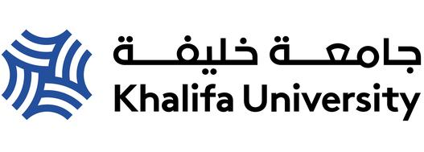
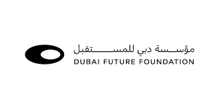
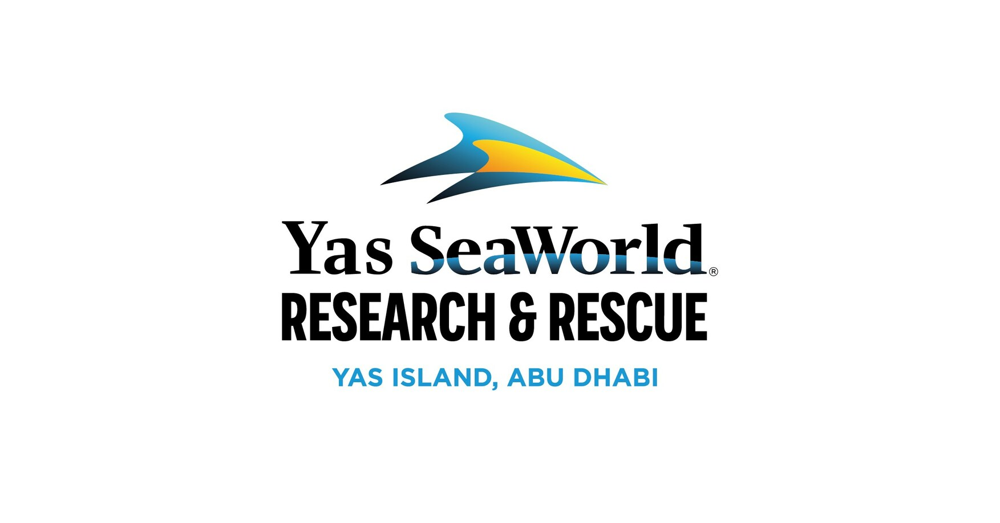
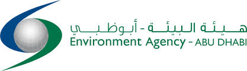

Collaborative partnership between leading institutions and organizations in the UAE
This project represents a unique collaboration between Khalifa University of Science and Technology, Dubai Future Lab, SeaWorld Abu Dhabi, and Abu Dhabi Environmental Agency, combining cutting-edge research capabilities with practical implementation expertise and environmental stewardship to advance underwater maritime monitoring technologies in the UAE and beyond.

Leading academic institution contributing deep expertise in robotics, marine systems, AI, and control systems, spearheading fundamental research and algorithm development.

Leading applied research and development in advanced robotics and AI, providing testbeds and real-world deployment environments.

Premier marine life destination providing testing facilities for underwater robotics, along with expertise in marine ecosystem management, conservation practices, and underwater environment understanding.

Government agency responsible for environmental protection and sustainable development, providing testing facilities for marine robotics along with regulatory guidance and environmental monitoring expertise.